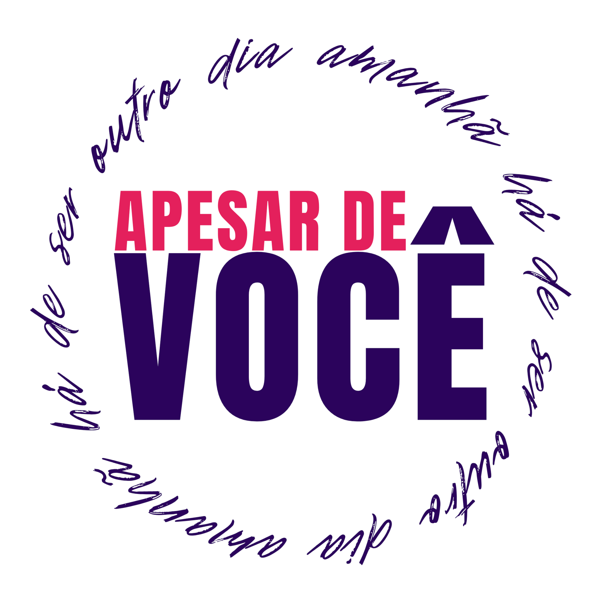
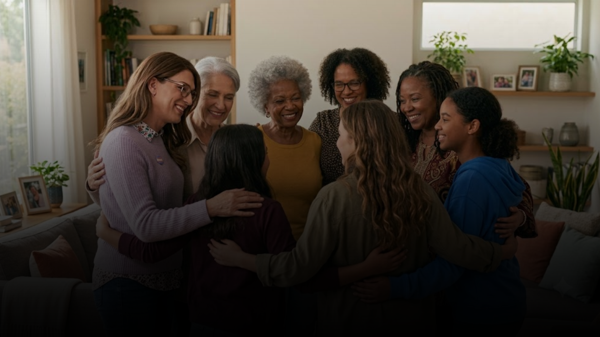
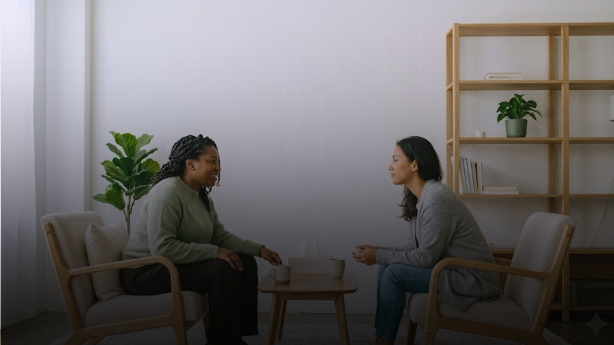
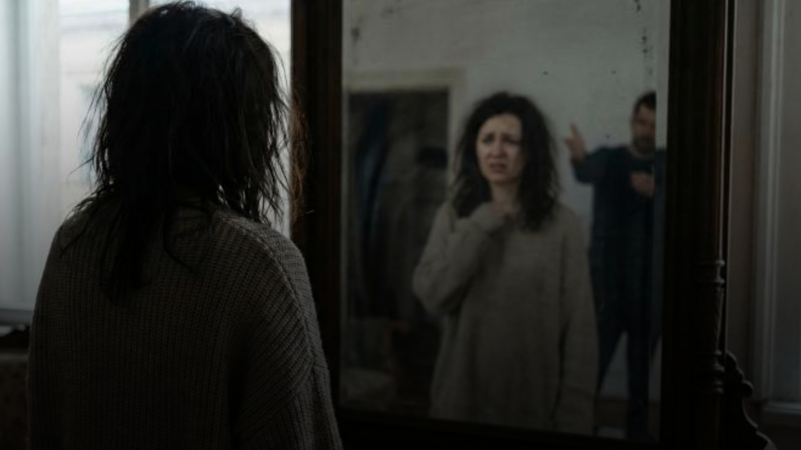

A violência contra a mulher pode assumir diferentes formas e nem sempre é identificada imediatamente como violência. Agressões físicas, ameaças, humilhações, perseguição, controle financeiro, violência sexual, destruição de bens e outras atitudes podem comprometer a liberdade, a segurança e a autonomia da mulher
A violência pode gerar isolamento e fazer com que muitas mulheres tenham dificuldade para falar sobre aquilo que estão vivendo. Um espaço de escuta responsável pode contribuir para reduzir esse sentimento de solidão e ampliar o acesso à informação. Na comunidade, relatos podem ser compartilhados de forma responsável, permitindo que experiências sejam utilizadas para promover conscientização, troca de informações e fortalecimento da rede de apoio.
Informação de qualidade é fundamental para compreender a violência contra a mulher e acompanhar as iniciativas relacionadas à sua prevenção e enfrentamento. Acompanhe conteúdos educativos, mudanças legislativas, campanhas de conscientização, informações sobre serviços públicos e notícias relacionadas à proteção e aos direitos das mulheres.
A plataforma 'Apesar de VOCÊ' existe para que nenhuma mulher precise enfrentar a violência em silêncio. Juntas, somos mais fortes.
Fique por dentro das atualizações legislativas, campanhas de conscientização e matérias educativas.
Oferecemos suporte completo com informações claras e sigilosas para apoiar e direcionar cada caso.
Entenda os seus direitos e as medidas protetivas previstas em lei de forma simples e acessível.
Conecte-se com comunidades, grupos de fortalecimento e profissionais qualificados.
Espaço seguro para acolhimento psicológico e recuperação de autonomia e autoestima.
Tenha acesso a informações sobre direitos, medidas de proteção e mecanismos previstos para o enfrentamento da violência.
Conheça a proposta do Apesar de VOCÊ, seus objetivos e a importância de ampliar o acesso à informação sobre a violência contra a mulher.
Conheça as diferentes formas de violência, compreenda como elas podem se manifestar e aprenda a reconhecer comportamentos que podem representar situações de abuso.
Informação pode ajudar a reconhecer situações de violência, compreender direitos e conhecer os caminhos de atendimento disponíveis.
Cadastre seu e-mail para receber conteúdos educativos, notícias, campanhas de conscientização e atualizações relacionadas à nossa rede de informação e apoio.